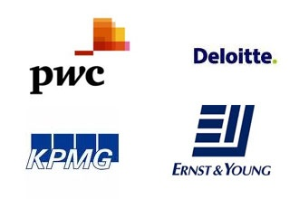

Big 4 Audit Firms
The Big Four are the four largest international professional services networks, offering audit, assurance, tax, consulting, advisory, actuarial, corporate finance, and legal services. They handle the vast majority of audits for publicly traded companies as well as many private companies, creating an oligopoly in auditing large companies. It is reported that the Big Four audit 99% of the companies in the FTSE 100, and 96% of the companies in the FTSE 250 Index, an index of the leading mid-cap listing companies. The Big Four firms are shown below, with their latest publicly available data.

Big Four
- Deloitte
- Revenue: $32.4b
- Employees: 200,000
- Revenue per employee: $162,000
- Headquarters: US
- PwC
- Revenue: $32.1b
- Employees: 184,000
- Revenue per employee: $174,456
- Headquarters: UK
- EY
- Previously known as Ernst & Young
- Revenue: $25.8b
- Employees: 175,000
- Revenue per employee: $147,428
- Headquarters: UK
- KPMG
- Revenue: $23.4b
- Employees: 155,000
- Revenue per employee: $150,968
- Headquarters: Netherlands
This group was once known as the "Big Eight", and was reduced to the "Big Six" and then "Big Five" by a series of mergers. The Big Five became the Big Four after the demise of Arthur Andersen in 2002, following its involvement in the Enron scandal.
BDO and Grant Thornton are the fifth and sixth largest firms, respectively.
None of the Big Four firms is a single firm; rather, they are professional services networks. Each is a network of firms, owned and managed independently, which have entered into agreements with other member firms in the network to share a common name, brand and quality standards. Each network has established an entity to coordinate the activities of the network. In one case (KPMG), the coordinating entity is Swiss, and in three cases (Deloitte, PricewaterhouseCoopers and Ernst & Young) the coordinating entity is a UK limited company. Those entities do not themselves perform external professional services, and do not own or control the member firms. They are similar to law firm networks found in the legal profession.
In many cases each member firm practises in a single country, and is structured to comply with the regulatory environment in that country. In 2007 KPMG announced a merger of four member firms (in the United Kingdom, Germany, Switzerland and Liechtenstein) to form a single firm.
Ernst & Young also includes separate legal entities which manage three of its four areas: Americas, EMEIA (Europe, The Middle East, India and Africa), and Asia-Pacific. (Note: the Japan area does not have a separate area management entity). These firms coordinate services performed by local firms within their respective areas but do not perform services or hold ownership in the local entities.
2002 saw the passage of the Sarbanes-Oxley Act into law, providing strict compliance rules to both businesses and their auditors. In 2013, Deloitte and PwC still claim the top two spots with only $200 million or 0.5% revenue difference. However, Deloitte has seen faster growth than PwC over the last few years indicating that they may reclaim the #1 spot in future years.